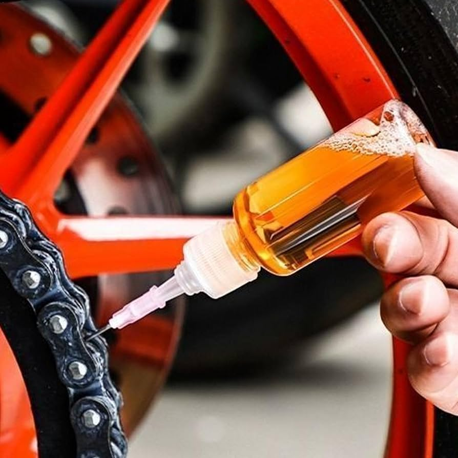

Materiales Necesarios
- Desengrasante biodegradable.
- Lubricante para cadena (seco o húmedo).
- Cepillo de cerdas duras o limpiador de cadenas.
- Trapo de microfibra limpio.
- Soporte para bicicleta (opcional).

Pasos a Seguir
- Desengrasar: Aplica el desengrasante mientras giras los pedales hacia atrás.
- Cepillar: Usa el cepillo para remover el lodo entre los eslabones.
- Secar: Pasa el trapo por la cadena hasta que no suelte residuos negros.
- Lubricar: Aplica una gota de aceite en cada eslabón.
- Retirar exceso: Limpia el exceso de aceite con el trapo para evitar atraer polvo.
Galería del Proceso



Videotutorial En Vivo
title="YouTube video player" frameborder="0" allow="accelerometer; autoplay; clipboard-write; encrypted-media; gyroscope; picture-in-picture" allowfullscreen>